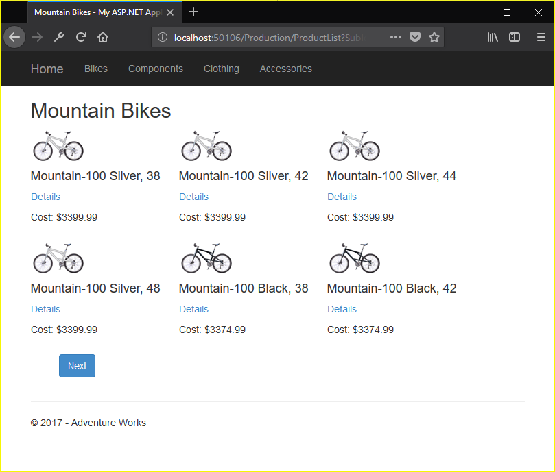

For this assignment we were to create a project that uses the adventureworks2014 database from microsoft. The database contained a lot of information, but the only things we had to worry about was production subsystem. We were to create a menu to navigate through product categories to their subcategories, and then display a list of the products on a page. We also had to implement a page that allowed the user to view a product in more detail, as well as enable them to leave reviews and thank them for the review once it was left. The purpose of this assignment is to show that we can work with a large multi-table database, as well as learn how to work with an existing database, rather than create one.
The assignment can be found here
The source code can be found here
First thing I had to do was download the correct database backup file from the provided link and restore the database file. To restore it I added a query file to App_Data with the following code and ran it.
RESTORE DATABASE AdventureWorks2014_Data
FROM DISK = 'C:\Users\pocke\Desktop\school-work\cs46X\cs460\AdventureWorks2014.bak'
WITH MOVE 'AdventureWorks2014_Data' TO 'C:\Users\pocke\Desktop\school-work\cs46X\cs460\HW6\HW6\App_Data\AdventureWorks2014.mdf',
MOVE 'AdventureWorks2014_Log' TO 'C:\Users\pocke\Desktop\school-work\cs46X\cs460\HW6\HW6\App_Data\AdventureWorks2014.ldf'
GO
Once the database was created I began working on reverse engineering the model classes. The way we were to do this was code first from database. We were shown how to do this in class, and with the link provided on the assignment page I managed to create a context class that created just the production subsystem, as that was the only one we were working with. I then added the connection string to the web config to hook up the database to the project and did a quick test to make sure it was hooked up before going on to the index page.
For the index page I created a basic view that just had a title and message detailing what the website is, as well as what it contains. I then got linqpad and began to work out how I was going to create the menu. This was to be a dropdown menu at the top of the page that would first have the product categories, from the database, that after clicking on would reveal a sub-menu that contained product subcategories that the user could click on and it would load a page with all products of that subcategory. To do this I would need both product category and sub category tables to be passed to the view. I only knew how to pass one model to the view so after some googling I found that you had to create a View Model that contained both of the other models that you wanted to pass as variables, and pass that as the view. This is because the view can only contain one model. After I did that I added the following code to the _layout.cshtml page so that every page contained the same menu.
<ul class="nav navbar-nav">
@foreach (var item in Model.ItemCat)
{
<li>
<a href="#" class="dropdown-toggle" data-toggle="dropdown">@item.Name</a>
<ul class="dropdown-menu">
@*add a link to product list page for each product subcategory*@
@foreach (var subitem in Model.ItemSubCat)
{
if (subitem.ProductCategoryID == item.ProductCategoryID)
{ <li>@Html.ActionLink(subitem.Name, "ProductList", "Production", new {
SubId = subitem.ProductSubcategoryID}, null)</li> }
}
</ul>
</li>
}
</ul>
This part wasn't too hard, a couple for loops that goes through both the category table, and sub category table and matches the category ID to the subcategory table. However the next part, creating a page that would display all products of that subcategory and allow people to view those items in more detail would prove to be much harder. To figure out how to do this I had to rely on linqpad a lot more, for the menu I didn't need to use it as I wasn't doing any queries. Getting a list of the products proved easier than I thought, the products table contains a column for productsubcatergory ID so I just had to query the table based on that information. I then split it so that only 6 items appeared. I did a count of all items and divided it by 6 to get the total page numbers so the user could walk through page by page without getting overwhelmed by a bunch of products.
Around this point I realized I hadn't created a separate branch for the features, I quickly corrected this and made one for the details page but this is something I would have to work on. Now that the user could see a list of products, I had to create a page for them to go to that would let the see more details about a product, as well as a link in that page to let them add a review for that product. The details page was just a more detailed version of the product list page, I named it productpage and listed the product name, cost and a link to add a review. I would add the description and pictures later, but I wanted to get the review working first. Getting the review to work was easy, I used the create item from the last homework with some adjustment to add a review to the review table.
Once I got that working I went on to adding images to both pages, thumbnails for product list and large photos for product page. Getting the item photos was where things started to get confusing. The following code shows the solution I came up with, and the text below it explains how I got to that solution.
IEnumerable <ProductPhoto> Photos = ViewModel.Db.ProductPhotoes.AsEnumerable();
var PhotoIDs = ViewModel.Db.ProductProductPhotoes.Join(ViewModel.ItemList,
item => item.ProductID,
id => id.ProductID, (id, item) =>
new { ProductPhotoID = id.ProductPhotoID, ProductID = id.ProductID }).AsEnumerable();
var tempPhotos = Photos.Join(PhotoIDs,
id => id.ProductPhotoID,
photo => photo.ProductPhotoID,
(photo, id) => new {
ProductPhotoID = photo.ProductPhotoID,
ThumbNailPhoto = photo.ThumbNailPhoto,
ProductID = id.ProductID
})
.OrderBy(p => p.ProductID).ToList();
//create a dictionary of thumbnails with productID as the key
ViewModel.ItemThumbNail = new Dictionary<int, byte[]>();
foreach (var tPhoto in tempPhotos)`
{
ViewModel.ItemThumbNail.Add(tPhoto.ProductID, tPhoto.ThumbNailPhoto);
}
The first step was to find out how the two were linked, I noticed there wasn't a photo column in the product table so I had to use productproductphotos. With that knowledge I began looking into how I could get the two together. I tried to go through the product table because it was linked, but it would only let me go to productproductphotos and didn't give me anything I could work with. So the next step I tried was to do a join which did lead me to the solution, but I wasn't able to do it in one join. I found the best way was to split it into two joins, one to get the productID and photoID together and a second to get the byte array and the productID. I wasn't sure how having two joined tables in view model would affect the view, so I created a dictionary and used that so I could pass it the productID and get the right photo. Once that was done I tweaked the css a little bit to make it look nice and ended up with this.
Getting the description and photo on the details page was easier now that I had an idea of how to access the other tables. The code for the photo was pretty much the same as it was for the product list page, and getting the description was also a similar process. I used the modelID found in the product table to get the description and once I had that on the page I put a foreach loop at the bottom to go through the review table and add the details from every reviewer, including their name, rating, review comments, and the date it was left. Once this was done all I had left to do was add in some error checking to make sure that if the user manually edited wrong numbers into query string they would be redirected to the index, or an error page if necessary.